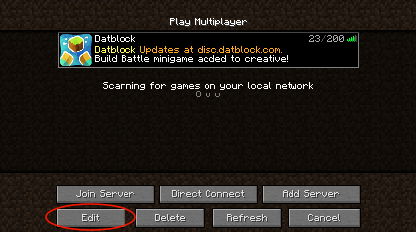
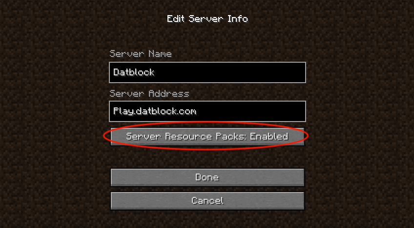

Resource Pack
How to get the resource pack
If you rejected the resource pack on your first join there are two solutions to get the resource pack.
Solution 1 - Enabling server resource packs
Select the server and click the Edit button at the bottom left corner and set it to Server Resource Packs: Enabled. This solution will require the client to load a resource pack when you join which may take a few seconds to load and a some clients may crash. Solution 2 does not have these issues.


Solution 2 - Doing it yourself
Download the resource pack and enable it yourself. Remember you also have to disable server resource pack in the server entry if you want to avoid the load delay on join, see the solution above for how to.
Click here to download the resource pack.Click here for a tutorial on how to install the resource pack.